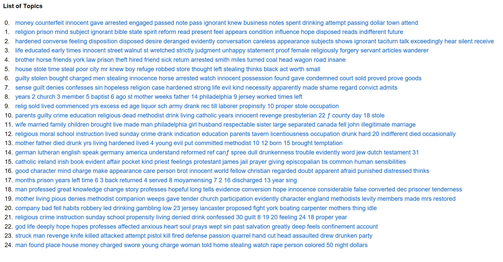

What initially drew me to this dataset were the descriptions of prisoners, ranging from a few short sentences to long, full paragraphs, written by Reverend Thomas Larcombe, the penitentiary’s “moral instructor” for the period in question. These descriptions have no pretense of objectivity--they are full of idiosyncratic details and veer from notes-to-self about the prisoners’ behaviors and personal history to paraphrases of the prisoners’ own speech.
It is clear from even the most cursory glance at these descriptions that Larcombe was interested in very particulary kinds of informations about the prisoners: whether they were literate, whether and how much they drank, their level and type of religiosity, whether and how deeply they felt guilt about their crime, and (especially in the later years recorded in this set of data) their upbringing and the current condition of their parents.
Running the descriptions through Voyant confirms some of these general impressions. “Religious” (912 occurences) and “crime” (814) were the top two most frequently occuring words by a significant margin, and “cause” (598), “instruction” (535), “guilty” (420), “parents” (496), “school” (482), “sunday” (477), “mother” (465),“years” (447), “father” (373), and “education” (370) were the next most common. These words can be roughly grouped into criminality, education, and family, with only “cause” leftover as somewhat referentially ambiguous.
This process of examining and grouping the most frequently occuring words in the descriptions is, in essence, topic modeling lite. That is, the impulse behind it is the same: to figure out at some basic level what Larcombe’s descriptions fixate on and prioritize. The advantage of topic modeling over the haphazard “sampling” I outlined above is (at least theoretically) that it is able both to take into consideration all of the words in the descriptions and to illuminate non-intuitive co-occurences of words.
I topic modeled the description from every available record and set the number of topics to 25. In what follows, I aim to carry out a two-fold analytical process: 1) to examine the visualization generated from the identified topics (see below) and analyze patterns and trends that can be seen from the chart alone and 2) to close read the list of generated topics, in part as a way of actually identifying a possible unifying theme of each and in part to problematize the kind of categorization.

As many have noted, topic modeling, as a technique for discovering recurring themes in texts, has serious shortcomings. Nan D. Za’s recent article in Critical Inquiry about the limitations of computational literary studies methods puts the matter starkly: “Without meaningful applications, topic modeling will look like a word-cloud generator for literary criticism” (625). In a similar vein, Benjamin Schmidt suggest that digital humanities scholars must “bring words back to topic models in humanistic practice” and that “visualization that uses the individual word assignments, not just the topic labels, can help dramatically change the readings that humanists give to topics.”
In light of these critiques, what are we to make of a set of topics like the one above? On the one hand, there are clear trends and patterns that can be seen in a visualization like the one above, which tracks the frequency with which these topics appear over the two decades covered by the available data, relative to the other 24 generated topics: Topic 22 (“god life deeply hope...”), for example, experiences a sharp downturn around 1839, but then stays relatively even until the end of the time period in question, while topic 12 (“religious moral school instruction...”) increases drastically around 1841 and topic 10 (“parents guilty crime education…”) around 1845. On the other hand, deciding what exactly binds the words in a given topic together is, in many cases, more difficult than it might appear.
I felt somewhat puzzled and discouraged by the generated topics at first, since, on first glance, there seemed to be a lot repeated words (and numbers) across the topics, and very little in the way of obvious organizing concepts for any of them. It was only after seeing some of the patterns in the visualization of these topics’ relative frequency that I felt more optimistic about the possibility of meaningfully labeling the sets of terms.
Let’s look closely at topic 22, which reads, in its “entirety”: “god life deeply hope hopes professes affected anxious heart soul prays wept sin past salvation greatly deep feels confinement account.” Right away, this topic strikes me as one driven primarily by emotion. Words like “hope,” “affected,” “anxious,” “wept,” and “feels” are the most obviously emotional without any need for context, but even words like “deeply,” “heart,” “soul,” and “greatly,” which are not in and of themselves “emotion words,” are emotion-adjacent--that is, it is very easy to imagine how these words might be used in conjunction with emotion words (e..g “deeply feels”; “greatly affected”).
We might also notice the “doubling” of certain words in the topic (“hope” and “hopes”; “deeply” and “deep”), which could be understood as demonstrating the topic modeling tool’s success in grouping variations of the same base word, or, on the contrary, a significant limitation of the tool (i.e. its inability to consolidate those variations). This is further complicated by the fact that “hope” and “hopes” are both nouns and verbs--could the duplication be registering something more complex about the way that those words are being used? Does one of the words appear in this topic primarily as a noun while the other primarily as a verb?
One conclusion to draw from the marked decrease in topic 22’s presence in the admissions descriptions might be that Larcombe became less preoccupied with the emotional state and behaviors of prisoners as time went on. However, if we look at topic 2, for example, we can see that topic 22 is just one of several topics where emotion words are grouped together into a topic. Though there are no exact overlaps (in terms of individual terms) between the two topics, many of the terms in topic 2 clearly pertain to the emotional life of the prisoners (“hardened,” “feeling,” “desire,” “taciturn”), though, it seems, in a more abstract sense than the terms in topic 22. If we were to classify topic 2 as a topic primarily driven by emotion, that emotion is described more in terms of prisoners’ tendencies and dispositions, rather than moods and particular instances of emotional behaviors. As such, we would have to revise our observation and say instead that Larcombe became less interested in prisoners’ specific emotional beehaviors while his interest in their general disposition remained relatively constant.